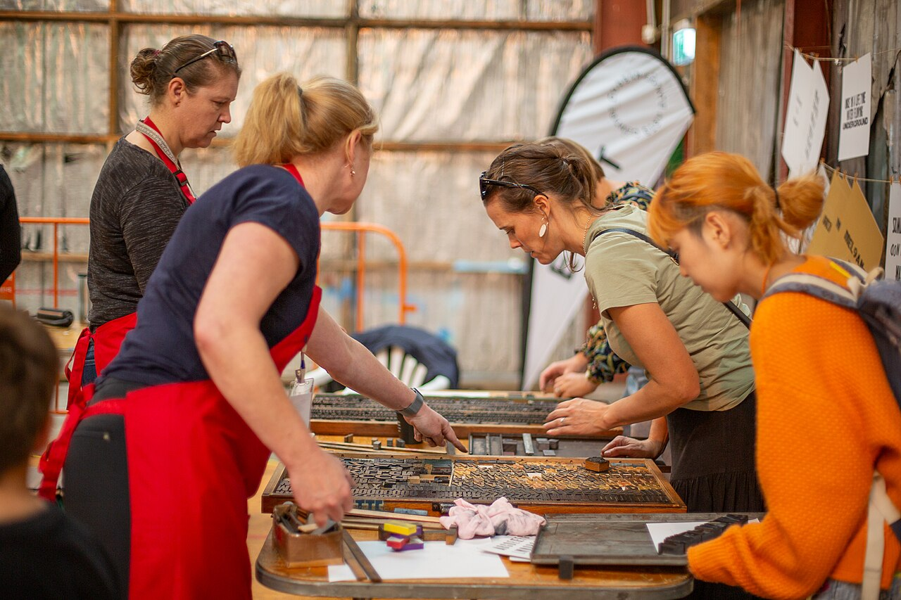
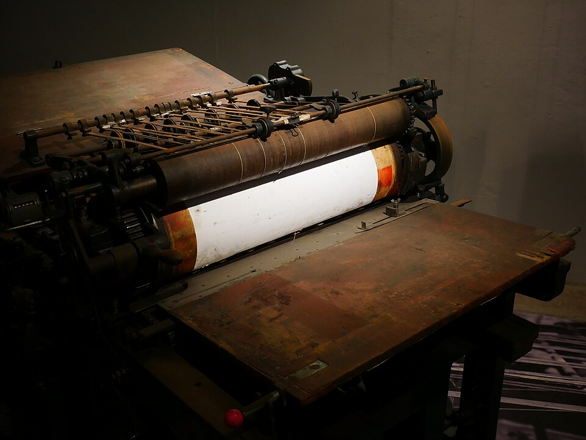
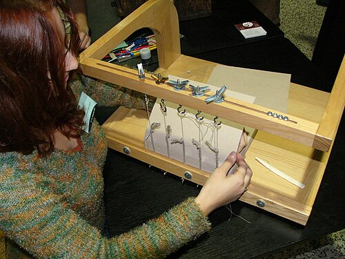
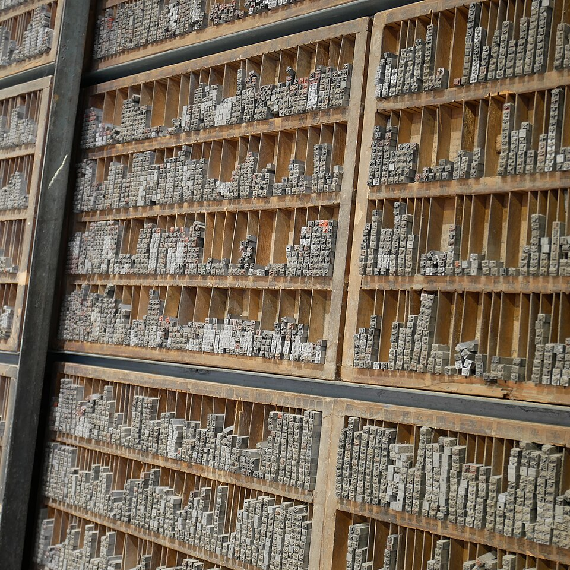
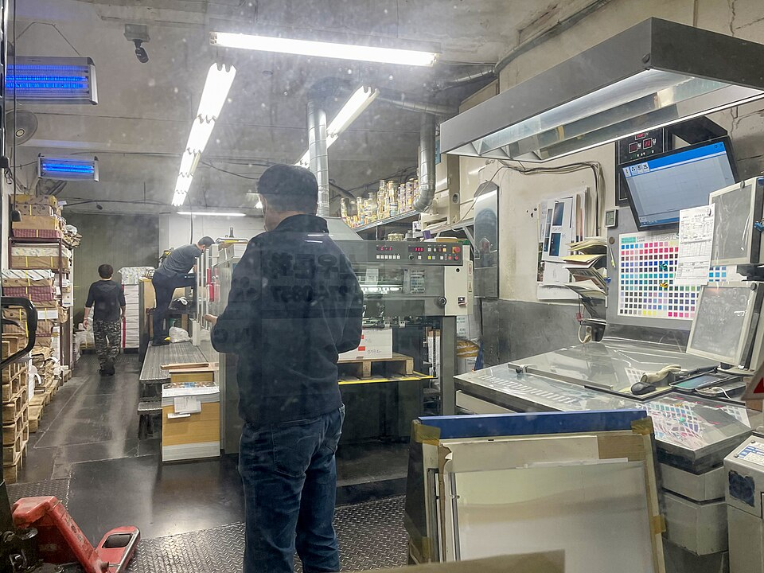
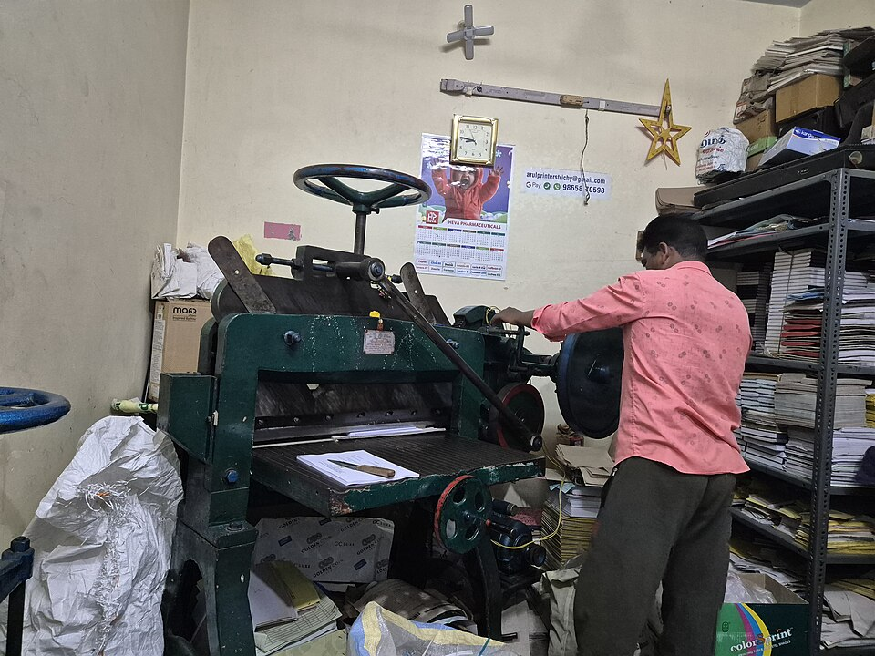
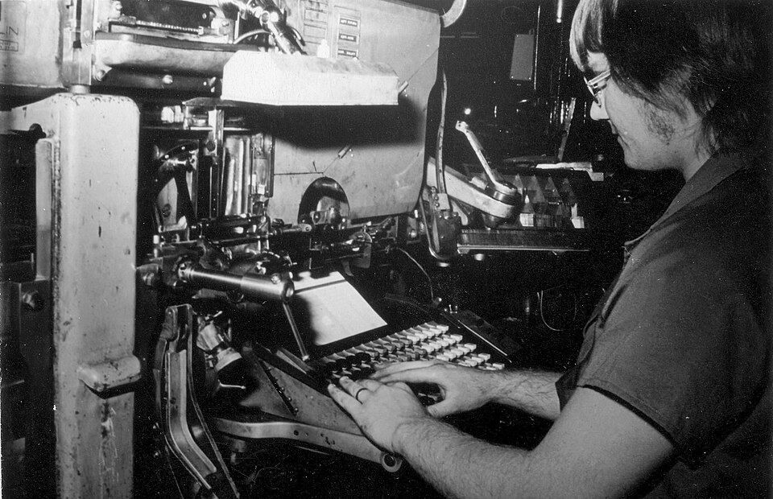

汐見印刷株式会社（架空）

株式会社 汐見印刷
活版の係
長尾 拓真

活版の催しで版を組む人（豪州）Tatiana Harper／CC BY-SA 4.0
活版印刷機（台湾）氏子／CC BY-SA 4.0
刷れるもの
名刺は100枚、冊子は50部、箱は300個から刷ります。
どれも、校了の日から数えた営業日で納めます。
-
名刺
- 刷り方
- 活版（1〜2色）／オフセット（1〜4色）
- 最小
- 100枚から
- 紙
- コットン紙 0.6mm、上質紙、色上質ほか28種
- 納期
- 校了から3〜4営業日
- 目安
- 100枚 6,270円から（税込）
-
冊子
- 刷り方
- オフセット（本文1〜4色）、表紙だけ活版も
- 最小
- 中綴じ 50部から／無線綴じ 100部から
- 大きさ
- A5・B5・A4、8〜128ページ
- 納期
- 校了から7営業日
- 目安
- A5 中綴じ16ページ 50部 39,600円から（税込）
-
箱
- 刷り方
- オフセット4色＋打ち抜き、活版の箔押し
- 最小
- 300個から
- 形
- 組み箱・スリーブ・台紙・紙の袋
- 納期
- 校了から12営業日（抜き型を新しく作るとき）
- 目安
- 抜き型 22,000円から＋刷りと抜き（税込）
ほかに、封筒・はがき・ショップカード・ポスター（菊全判まで）を刷ります。

見積もり
活版は文字がへこむ手ざわり、オフセットは値段と早さ。
部数と色を選ぶと、両方の値段と納期が出ます。

| 活版 | オフセット | |
|---|---|---|
| 機械 | プラテン機（1961年・1974年製） | 菊半裁2色機／菊全判4色機 |
| 版 | 樹脂凸版 1枚 | CTP の刷版 1枚 |
| 合計（税込） | 6,270円 | 3,740円 |
| 1枚あたり | 62.7円 | 37.4円 |
| 納期 | 校了から4営業日 | 校了から3営業日 |
| 向いている方 | 文字がへこむ手ざわり |
紙はコットン紙 0.6mm（活版）・上質紙 220kg（オフセット）の値段です。データ入稿のとき。原稿から組むときは組版料 3,300円を足します。
設備
本社工場の1階に、活版とオフセットの機械が並んでいます。どちらで刷るかは、見積もりのときに決めます。
活版金属の活字か樹脂の版を、紙に押して刷ります
| 機械 | 年 | 刷れる大きさ |
|---|---|---|
| 手フート（創業のときの1台） | 1956 | はがきまで・1色 |
| プラテン機 1号機 | 1961 | A5まで・1色 |
| プラテン機 2号機（箔押しもできます） | 1974 | A5まで・1色 |
| 活字 明朝 5号・9〜16ポイント・初号 | — | 約11万8千本・字架18本 |

オフセット版のインキを一度ゴムに移してから、紙に刷ります
| 機械 | 年 | 刷れる大きさ |
|---|---|---|
| 菊全判 4色機 | 2015 | 636×939mm・4色 |
| 菊半裁 2色機 | 1998 | 469×636mm・2色 |
| CTP（刷版を焼く機械） | 2009 | 菊全判の版まで |

加工
| 断裁機 | 2011 | 1台 |
| 中綴じ機・無線綴じ機 | 2006 | 各1台 |
| 打ち抜き機（箱・台紙） | 2019 | 1台 |
仕事の流れ
仕事ごとに作業伝票を1枚起こし、終わった係が判を押して次へ回します。下は、活版の名刺100枚のときの伝票です。

受付
営業
電話・メール・来店で。紙の見本帳を見ながら決めます
1日目
組版
組版
データを確かめるか、原稿から活字で組みます
1〜2日目
校正
組版
PDF と、活版は試し刷り1枚。赤字はそこに書き込みます
直しは2回まで無料
校了
お客
「この通り刷ってよい」の返事を受けた日から数えます
ここから4営業日
製版
活版
樹脂凸版を焼くか、活字の版を締めます
校了の翌日
印刷
活版
刷り出しの1枚を見本帳に綴じてから、本刷りに入ります
2〜3日目
断裁・納品
加工
切りそろえて箱に詰め、来店か宅配で
4日目
1956年からの刷り出しを綴じた見本帳は412冊あります。工場見学の日に、どの年のものでも開いて見られます。
会社概要
| 商号 | 株式会社 汐見印刷（架空の会社です） |
|---|---|
| 創業 | 1956年4月 |
| 代表 | 代表取締役 長尾 拓真（3代目） |
| 資本金 | 1,000万円 |
| 社員 | 18名（営業・受付 3／組版 3／刷版・オフセット 5／活版 2／断裁・製本・加工 4／総務 1） |
| 本社工場 | 汐見町三丁目4-12（架空の住所） 汐見駅から歩いて9分。来店用の駐車場 3台 |
| 電話 | 0559-00-1956（架空の番号） |
| 営業時間 | 平日 8:30〜17:30 土日祝 定休日（工場見学のある第2土曜は 10:00〜12:00 だけ開けます） |
| 仕事 | 名刺・封筒・はがき・冊子・カタログ・ポスター・箱と台紙の印刷と加工、活版の箔押し |
2026年11月現在
沿革
- 19564月、長尾清次が汐見町の米屋の2階で創業。手フート1台と活字の棚4本から。
- 1961プラテン機の1号機を入れる。名刺と伝票の注文が増える。
- 1968汐見町三丁目に工場を建てて移る（いまの本社工場）。
- 1974プラテン機の2号機を入れ、箔押しを始める。
- 1979有限会社 汐見印刷になる。
- 1987菊半裁の単色機でオフセット印刷を始める。
- 1998菊半裁2色機に入れ替える。
- 2004株式会社になる。長尾和子が2代目の代表に。
- 2006中綴じ機・無線綴じ機を入れ、冊子を社内で綴じ始める。
- 2009CTP を入れ、フィルムの製版をやめる。
- 2015菊全判4色機を入れる。
- 2019打ち抜き機を入れ、箱と台紙を始める。
- 2022長尾拓真が3代目の代表に。
- 2026創業70年。刷り見本帳が412冊になる。
お知らせ
- 工場見学11月14日（第2土曜）の工場見学は満席になりました。次は12月12日（土）です。
- 活版年賀状の活版印刷の受付を始めました。12月12日に校了のものまで、年内に納めます。
- 料金用紙の値上がりにより、10月1日の受付分から冊子の見積もりを改めました。
活版の見習い 1名募集
- 仕事
- 活版の名刺・カードの組版と印刷。最初の半年は、2号機の刷りと活字の棚の整理から
- 月給
- 22万4千円から（経験なし）。経験は面接で決めます
- 時間
- 8:30〜17:30（休憩60分）、残業は月10時間ほど
- 休み
- 土日祝、年間休日121日（2026年度）
- 勤務地
- 本社工場（汐見町三丁目）
- 選考
- 職場見学（1時間）→ 面接 → 1日いっしょに刷る
お問い合わせ
見積もり・印刷の相談
営業・受付（3名） 0559-00-1956
平日 8:30〜17:30。紙の見本は来店で見られます活版の名刺・カード
活版の係（2名）が受けます。手ざわりの見本を郵送できます（無料・1回まで）
工場見学
毎月第2土曜 10:00〜11:30、1回8名まで。下のフォームで申し込んでください
採用
総務（1名） 職場見学はいつでも受けます
受けていない仕事：当日に仕上げる特急、布や木への印刷、シールのラベル。